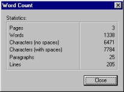

| |
|
About AbiWord About Open Source Index Contents What's New Check Version Introduction Installation Getting Started The Workspace Entering Text Formatting Edit Commands Paragraphs Styles Inserting Objects Printing Preferences Shortcuts abisource.com FAQ Credits Search |
Entering TextAfter creating a new AbiWord document, you can enter text on the blank page. Begin typing and the letters will automatically be inserted where the cursor is. This cursor advances its position with each new letter. If the OVERWRITE function is turned on (by pressing the "Insert" key), the letters you type will overwrite any existing ones.To introduce a new paragraph, you simply press on the " Enter " key. However, the " Enter " key is only used to introduce a new paragraph and must never be used to introduce a simple new line. The changing of lines is managed by AbiWord when the text overflows the right hand margin. It is the guiding principle of any word processor. You can however add a manual line break by simultaneously pressing on the keys " Shift " and " Enter " and that does not make a new paragraph. Spell checkingSometimes you make typing errors during the data entry. To correct the mispelt text, use:* the "Backspace" key (above the " Enter " key) makes it possible to erase the character located BEFORE the cursor of insertion I.If a word or a text is selected, the pressing the key " Backspace " or " Delete " will erase all the selected text. When a word is mispelt, AbiWord underlines in red this word indicating
that it does not exist in its dictionary. Here for example is the word
juxtaposition: To correct a word underlined in red, click the right button of the mouse on the word. A menu then opens containing a certain number of suggestions. If the correctly spelled word appears among the suggestions, click above so that the mispelt word is automatically corrected.
If no suggestion is made by AbiWord, then that means that AbiWord did not find any similar word in its dictionary. It should then be checked if this word is spelt correctly. If this is the case, there are then two possibilities:
* The Ignore button will not underline any more of the selected word and will continue the checking.To launch the spell checker, there are several options:
Statistics on the document in progressYou can get various statistics on the document in progress, espicially useful during the drafting of a long document. Abiword can generate a summary or a report/ratio, and it can be interesting to have statistics, for example, the number of pages or words which make up the document in progress. To do so, go to the "Tools" menu and click on " Word Count". A window similar to the one shown below appears:  This window gives various bit of information such as the number of pages in the document, the word count of the document, the number of characters in the document (with or without space), the number of paragraphs in the document and finally the number of lines in the document. Click on the "Close" button to close this window. The zoom functionDuring the data entry or before printing the document, you can zoom in on the document (to have an overall picture or to see the enlarged document). There are two ways to do this:* Click on the small arrow on the right of the Zoom list located on the Standard toolbar then select the amount of zoom from the list. |


![[Zoom dialog]](images/zoom.jpg)